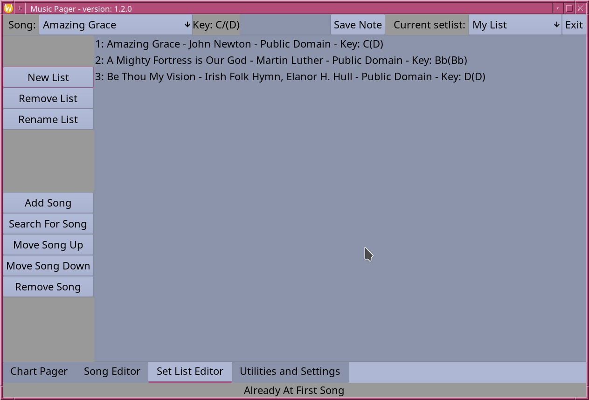
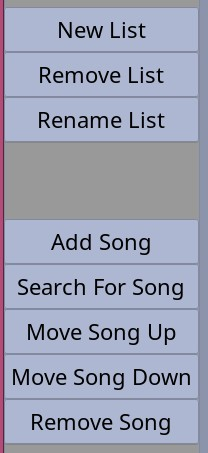

Set List editor page
Previous Page || Main Page || Next Page
This is where set lists are created and edited.

The buttons on the left side help create and edit set lists.

The top three buttons deal with whole lists:
- New List: opens a dialog to create a new list.
- Remove List: removes the current list after confirming that was intended.
- Rename List: opens a dialog to rename the current list.
The bottom five buttons deal with songs within the list:
- Add Song: opens a file selector for choosing a song file.
- Search For Song: opens a search box where the title, lyrics from the first line
of the first verse or chorus or a song number can be searched for. All songs that
match will be listed.
- Move Song Up: moves the selected song up in the list order.
- Move Song Down: moves the selected song down in the list order
- Remove Song: removes the selected song from the set list
Previous Page || Main Page || Next Page